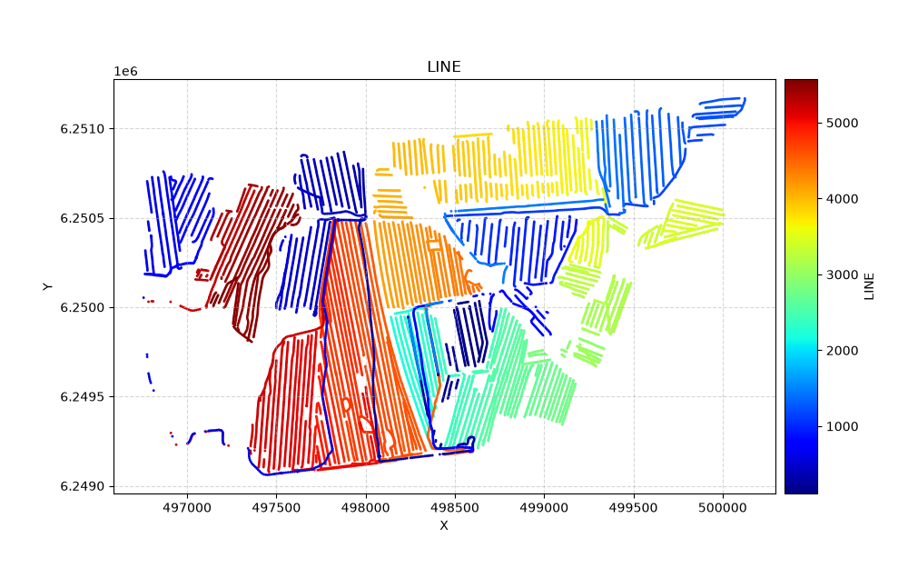
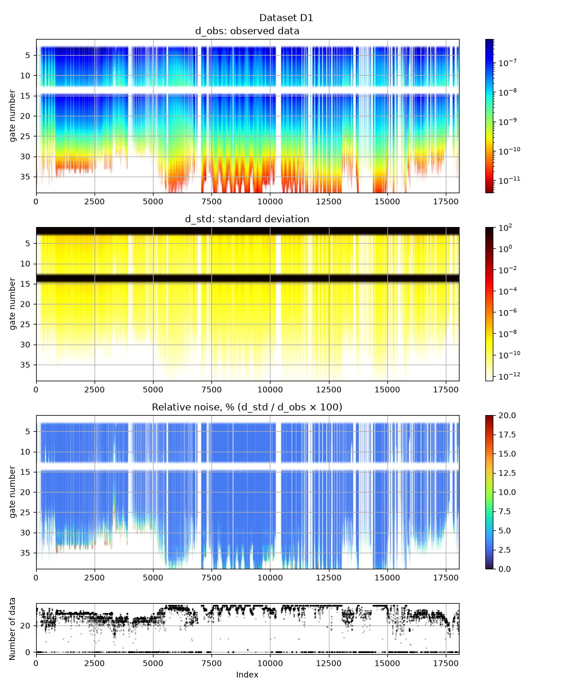
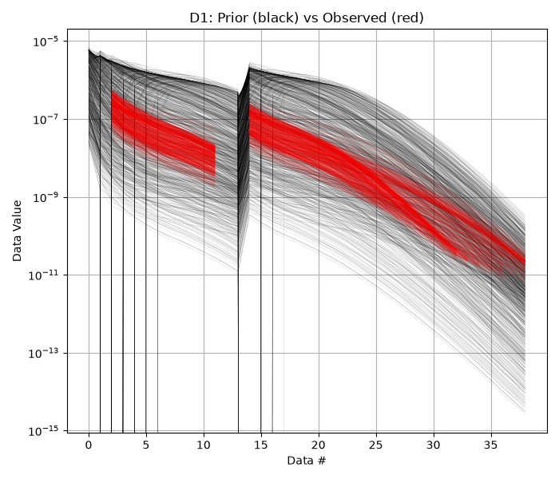
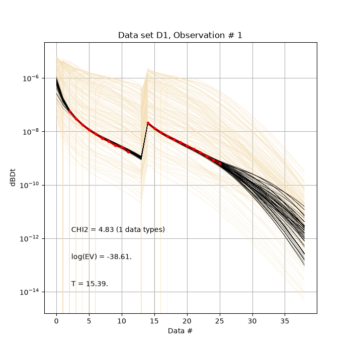
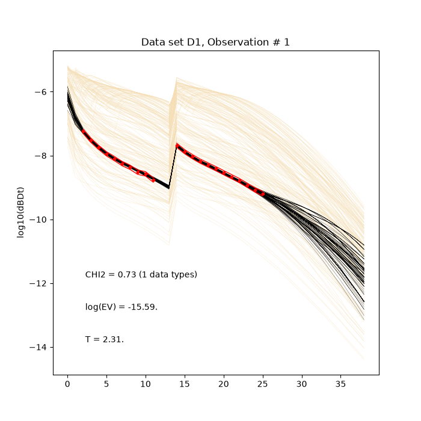
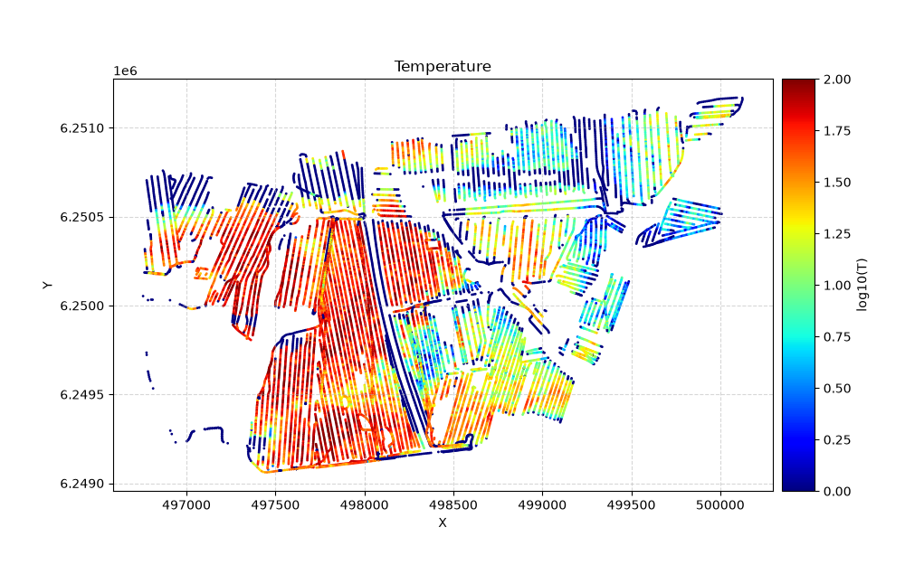
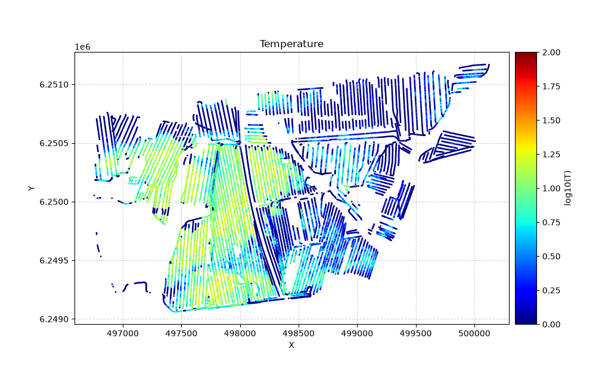
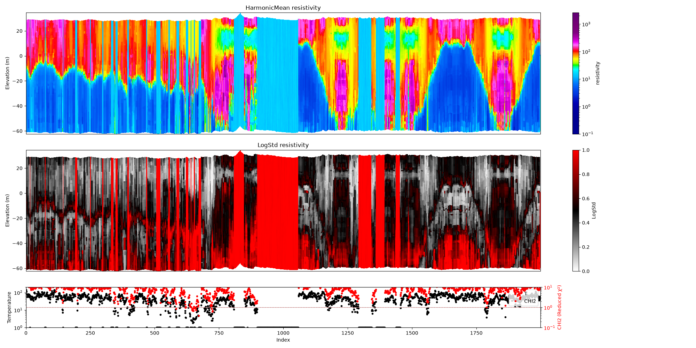
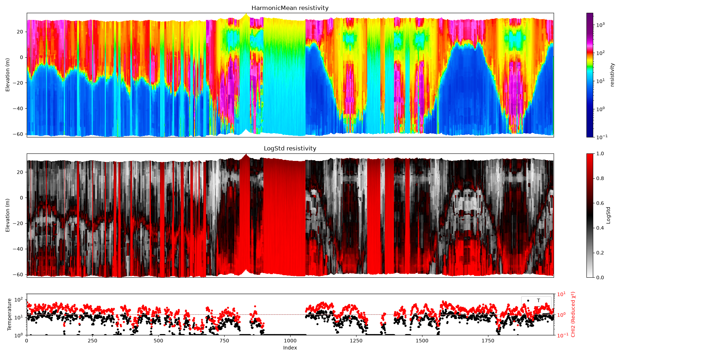

Note
Go to the end to download the full example code.
Data, and noise, in linear or log space¶
This notebooks explores the difference using data (and the noise) model in linear and logspace.
try:
# Check if the code is running in an IPython kernel (which includes Jupyter notebooks)
get_ipython()
# If the above line doesn't raise an error, it means we are in a Jupyter environment
# Execute the magic commands using IPython's run_line_magic function
get_ipython().run_line_magic('load_ext', 'autoreload')
get_ipython().run_line_magic('autoreload', '2')
except:
# If get_ipython() raises an error, we are not in a Jupyter environment
# # # # # # #%load_ext autoreload
# # # # # # #%autoreload 2
pass
import integrate as ig
hardcopy = True
import numpy as np
import matplotlib.pyplot as plt
0. Get some TTEM data¶
case = 'HADERUP'
files = ig.get_case_data(case=case, showInfo=2)
f_data_h5 = files[0]
file_gex= ig.get_gex_file_from_data(f_data_h5)
print("Using data file: %s" % f_data_h5)
print("Using GEX file: %s" % file_gex)
ig.plot_geometry(f_data_h5, pl='LINE')

Getting data for case: HADERUP
Downloading HADERUP: 0%| | 0/4 [00:00<?, ?it/s]Checking if file exists on the remote server...
Downloading HADERUP_MEAN_ALL.h5
Downloaded HADERUP_MEAN_ALL.h5
Downloading HADERUP: 25%|██▌ | 1/4 [00:02<00:06, 2.08s/it]Checking if file exists on the remote server...
Downloading TX07_Haderup_mean.gex
Downloaded TX07_Haderup_mean.gex
Downloading HADERUP: 50%|█████ | 2/4 [00:02<00:01, 1.04it/s]Checking if file exists on the remote server...
Downloading README_HADERUP
Downloaded README_HADERUP
Downloading HADERUP: 75%|███████▌ | 3/4 [00:02<00:00, 1.71it/s]Checking if file exists on the remote server...
Downloading prior_haderup_dec25.xlsx
Downloaded prior_haderup_dec25.xlsx
Downloading HADERUP: 100%|██████████| 4/4 [00:02<00:00, 2.33it/s]
Downloading HADERUP: 100%|██████████| 4/4 [00:02<00:00, 1.55it/s]
--> Got data for case: HADERUP
Using data file: HADERUP_MEAN_ALL.h5
Using GEX file: TX07_Haderup_mean.gex
f_data_h5=HADERUP_MEAN_ALL.h5
The data, d_obs and d_std, can be plotted using ig.plot_data
ig.plot_data(f_data_h5, hardcopy=hardcopy)

## Create a dataset in log-space
f_data_log_h5 = 'DATA_LOGSPACE.h5'
ig.copy_hdf5_file(f_data_h5, f_data_log_h5)
DATA = ig.load_data(f_data_h5)
D_obs = DATA['d_obs'][0]
D_std = DATA['d_std'][0]
lD_obs = np.log10(D_obs)
lD_std_up = np.abs(np.log10(D_obs+D_std)-lD_obs)
lD_std_down = np.abs(np.log10(D_obs-D_std)-lD_obs)
corr_std = 0.02
lD_std = np.abs((lD_std_up+lD_std_down)/2) + corr_std
ig.save_data_gaussian(lD_obs, D_std = lD_std, f_data_h5 = f_data_log_h5, id=1, showInfo=0, is_log=1)
lDATA = ig.load_data(f_data_log_h5)
Loading data from HADERUP_MEAN_ALL.h5. Using data types: [1]
- D1: id_prior=1, gaussian, Using 18050/39 data
/home/tmeha/PROGRAMMING/integrate_module/examples/gallery/90_other/integrate_linear_logspace.py:59: RuntimeWarning: invalid value encountered in log10
lD_std_down = np.abs(np.log10(D_obs-D_std)-lD_obs)
Data has 18050 stations and 39 channels
Removing group DATA_LOGSPACE.h5:D1
Adding group DATA_LOGSPACE.h5:D1
Loading data from DATA_LOGSPACE.h5. Using data types: [1]
- D1: id_prior=1, gaussian, Using 18050/39 data
1. Setup the prior model ($rho(mathbf{m},mathbf{d})$¶
Select how many, N, prior realizations should be generated
N=200000
f_prior_h5 = ig.prior_model_layered(N=N,lay_dist='chi2', NLAY_deg=4, RHO_min=1, RHO_max=3000, f_prior_h5='PRIOR.h5')
print('%s is used to hold prior realizations' % (f_prior_h5))
PRIOR.h5 is used to hold prior realizations
1b. Then, a corresponding sample of $rho(mathbf{d})$, will be generated¶
Then the prior data, corresponding to the prior model parameters, are computed, using the GA-AEM code and the GEX file (from the DATA).
Compute prior data in linear space
f_prior_data_h5 = ig.copy_hdf5_file(f_prior_h5,'PRIOR_DATA_linear.h5')
f_prior_data_h5 = ig.prior_data_em(f_prior_data_h5, file_gex, doMakePriorCopy=False)
# Compute prior data in log space
f_prior_data_log_h5 = ig.copy_hdf5_file(f_prior_h5,'PRIOR_DATA_log.h5')
f_prior_data_log_h5 = ig.prior_data_em(f_prior_data_log_h5, file_gex, doMakePriorCopy=False, is_log=True)
prior_data_anemone[gpu]: Time= 19.2s/200000 soundings. 0.1ms/sounding, 10401.8it/s
/home/tmeha/PROGRAMMING/integrate_module/integrate/anemone_forward.py:569: RuntimeWarning: invalid value encountered in log10
D = np.log10(D)
prior_data_anemone[gpu]: Time= 18.3s/200000 soundings. 0.1ms/sounding, 10899.6it/s
ig.plot_data_prior(f_prior_data_h5,f_data_h5,nr=1000,hardcopy=hardcopy)

True
ig.plot_data_prior(f_prior_data_log_h5,f_data_log_h5,nr=1000,hardcopy=hardcopy)
The posterior distribution is sampled using the extended rejection sampler.
Rejection sampling in linear space
N_use = N
T_base = 1 # The base annealing temperature.
autoT = 1 # Automatically set the annealing temperature
f_post_h5 = ig.integrate_rejection(f_prior_data_h5,
f_data_h5,
f_post_h5 = 'POST_linear.h5',
N_use = N_use,
)
Rejection Sampling (JAX): 0%| | 0/283 [00:00<?, ?it/s]
Rejection Sampling (JAX): 0%| | 1/283 [00:00<02:44, 1.72it/s]
Rejection Sampling (JAX): 1%|▏ | 4/283 [00:00<00:41, 6.66it/s]
Rejection Sampling (JAX): 2%|▏ | 6/283 [00:00<00:29, 9.37it/s]
Rejection Sampling (JAX): 3%|▎ | 9/283 [00:00<00:21, 12.72it/s]
Rejection Sampling (JAX): 4%|▍ | 12/283 [00:01<00:18, 15.03it/s]
Rejection Sampling (JAX): 5%|▌ | 15/283 [00:01<00:16, 16.74it/s]
Rejection Sampling (JAX): 6%|▋ | 18/283 [00:01<00:14, 17.85it/s]
Rejection Sampling (JAX): 7%|▋ | 21/283 [00:01<00:13, 18.72it/s]
Rejection Sampling (JAX): 8%|▊ | 24/283 [00:01<00:13, 19.27it/s]
Rejection Sampling (JAX): 10%|▉ | 27/283 [00:01<00:13, 19.66it/s]
Rejection Sampling (JAX): 11%|█ | 30/283 [00:01<00:12, 19.95it/s]
Rejection Sampling (JAX): 12%|█▏ | 33/283 [00:02<00:12, 20.27it/s]
Rejection Sampling (JAX): 13%|█▎ | 36/283 [00:02<00:12, 20.58it/s]
Rejection Sampling (JAX): 14%|█▍ | 39/283 [00:02<00:11, 20.82it/s]
Rejection Sampling (JAX): 15%|█▍ | 42/283 [00:02<00:11, 20.87it/s]
Rejection Sampling (JAX): 16%|█▌ | 45/283 [00:02<00:11, 20.80it/s]
Rejection Sampling (JAX): 17%|█▋ | 48/283 [00:02<00:11, 20.99it/s]
Rejection Sampling (JAX): 18%|█▊ | 51/283 [00:02<00:11, 20.89it/s]
Rejection Sampling (JAX): 19%|█▉ | 54/283 [00:03<00:10, 20.83it/s]
Rejection Sampling (JAX): 20%|██ | 57/283 [00:03<00:10, 20.80it/s]
Rejection Sampling (JAX): 21%|██ | 60/283 [00:03<00:10, 20.95it/s]
Rejection Sampling (JAX): 22%|██▏ | 63/283 [00:03<00:10, 21.11it/s]
Rejection Sampling (JAX): 23%|██▎ | 66/283 [00:03<00:10, 21.24it/s]
Rejection Sampling (JAX): 24%|██▍ | 69/283 [00:03<00:10, 21.30it/s]
Rejection Sampling (JAX): 25%|██▌ | 72/283 [00:03<00:09, 21.44it/s]
Rejection Sampling (JAX): 27%|██▋ | 75/283 [00:04<00:09, 21.62it/s]
Rejection Sampling (JAX): 28%|██▊ | 78/283 [00:04<00:09, 21.78it/s]
Rejection Sampling (JAX): 29%|██▊ | 81/283 [00:04<00:09, 21.84it/s]
Rejection Sampling (JAX): 30%|██▉ | 84/283 [00:04<00:09, 21.92it/s]
Rejection Sampling (JAX): 31%|███ | 87/283 [00:04<00:08, 22.02it/s]
Rejection Sampling (JAX): 32%|███▏ | 90/283 [00:04<00:08, 21.99it/s]
Rejection Sampling (JAX): 33%|███▎ | 93/283 [00:04<00:08, 21.65it/s]
Rejection Sampling (JAX): 34%|███▍ | 96/283 [00:05<00:08, 21.64it/s]
Rejection Sampling (JAX): 35%|███▍ | 99/283 [00:05<00:08, 21.35it/s]
Rejection Sampling (JAX): 36%|███▌ | 102/283 [00:05<00:08, 21.54it/s]
Rejection Sampling (JAX): 37%|███▋ | 105/283 [00:05<00:08, 21.32it/s]
Rejection Sampling (JAX): 38%|███▊ | 108/283 [00:05<00:08, 21.19it/s]
Rejection Sampling (JAX): 39%|███▉ | 111/283 [00:05<00:08, 21.11it/s]
Rejection Sampling (JAX): 40%|████ | 114/283 [00:05<00:07, 21.15it/s]
Rejection Sampling (JAX): 41%|████▏ | 117/283 [00:06<00:07, 21.42it/s]
Rejection Sampling (JAX): 42%|████▏ | 120/283 [00:06<00:07, 21.46it/s]
Rejection Sampling (JAX): 43%|████▎ | 123/283 [00:06<00:07, 21.64it/s]
Rejection Sampling (JAX): 45%|████▍ | 126/283 [00:06<00:07, 21.65it/s]
Rejection Sampling (JAX): 46%|████▌ | 129/283 [00:06<00:07, 21.61it/s]
Rejection Sampling (JAX): 47%|████▋ | 132/283 [00:06<00:06, 21.61it/s]
Rejection Sampling (JAX): 48%|████▊ | 135/283 [00:06<00:06, 21.34it/s]
Rejection Sampling (JAX): 49%|████▉ | 138/283 [00:07<00:06, 21.27it/s]
Rejection Sampling (JAX): 50%|████▉ | 141/283 [00:07<00:06, 21.13it/s]
Rejection Sampling (JAX): 51%|█████ | 144/283 [00:07<00:06, 21.15it/s]
Rejection Sampling (JAX): 52%|█████▏ | 147/283 [00:07<00:06, 21.10it/s]
Rejection Sampling (JAX): 53%|█████▎ | 150/283 [00:07<00:06, 20.94it/s]
Rejection Sampling (JAX): 54%|█████▍ | 153/283 [00:07<00:06, 20.86it/s]
Rejection Sampling (JAX): 55%|█████▌ | 156/283 [00:07<00:06, 20.82it/s]
Rejection Sampling (JAX): 56%|█████▌ | 159/283 [00:08<00:06, 20.63it/s]
Rejection Sampling (JAX): 57%|█████▋ | 162/283 [00:08<00:05, 20.63it/s]
Rejection Sampling (JAX): 58%|█████▊ | 165/283 [00:08<00:05, 20.58it/s]
Rejection Sampling (JAX): 59%|█████▉ | 168/283 [00:08<00:05, 20.67it/s]
Rejection Sampling (JAX): 60%|██████ | 171/283 [00:08<00:05, 20.60it/s]
Rejection Sampling (JAX): 61%|██████▏ | 174/283 [00:08<00:05, 20.84it/s]
Rejection Sampling (JAX): 63%|██████▎ | 177/283 [00:08<00:05, 21.10it/s]
Rejection Sampling (JAX): 64%|██████▎ | 180/283 [00:09<00:05, 20.53it/s]
Rejection Sampling (JAX): 65%|██████▍ | 183/283 [00:09<00:04, 20.32it/s]
Rejection Sampling (JAX): 66%|██████▌ | 186/283 [00:09<00:04, 20.58it/s]
Rejection Sampling (JAX): 67%|██████▋ | 189/283 [00:09<00:04, 20.60it/s]
Rejection Sampling (JAX): 68%|██████▊ | 192/283 [00:09<00:04, 20.64it/s]
Rejection Sampling (JAX): 69%|██████▉ | 195/283 [00:09<00:04, 20.71it/s]
Rejection Sampling (JAX): 70%|██████▉ | 198/283 [00:09<00:04, 20.36it/s]
Rejection Sampling (JAX): 71%|███████ | 201/283 [00:10<00:04, 20.42it/s]
Rejection Sampling (JAX): 72%|███████▏ | 204/283 [00:10<00:03, 20.50it/s]
Rejection Sampling (JAX): 73%|███████▎ | 207/283 [00:10<00:03, 20.51it/s]
Rejection Sampling (JAX): 74%|███████▍ | 210/283 [00:10<00:03, 20.65it/s]
Rejection Sampling (JAX): 75%|███████▌ | 213/283 [00:10<00:03, 20.67it/s]
Rejection Sampling (JAX): 76%|███████▋ | 216/283 [00:10<00:03, 20.56it/s]
Rejection Sampling (JAX): 77%|███████▋ | 219/283 [00:10<00:03, 20.71it/s]
Rejection Sampling (JAX): 78%|███████▊ | 222/283 [00:11<00:02, 20.74it/s]
Rejection Sampling (JAX): 80%|███████▉ | 225/283 [00:11<00:02, 20.63it/s]
Rejection Sampling (JAX): 81%|████████ | 228/283 [00:11<00:02, 20.59it/s]
Rejection Sampling (JAX): 82%|████████▏ | 231/283 [00:11<00:02, 20.51it/s]
Rejection Sampling (JAX): 83%|████████▎ | 234/283 [00:11<00:02, 20.56it/s]
Rejection Sampling (JAX): 84%|████████▎ | 237/283 [00:11<00:02, 20.68it/s]
Rejection Sampling (JAX): 85%|████████▍ | 240/283 [00:11<00:02, 20.36it/s]
Rejection Sampling (JAX): 86%|████████▌ | 243/283 [00:12<00:01, 20.42it/s]
Rejection Sampling (JAX): 87%|████████▋ | 246/283 [00:12<00:01, 20.40it/s]
Rejection Sampling (JAX): 88%|████████▊ | 249/283 [00:12<00:01, 20.38it/s]
Rejection Sampling (JAX): 89%|████████▉ | 252/283 [00:12<00:01, 20.45it/s]
Rejection Sampling (JAX): 90%|█████████ | 255/283 [00:12<00:01, 20.54it/s]
Rejection Sampling (JAX): 91%|█████████ | 258/283 [00:12<00:01, 20.68it/s]
Rejection Sampling (JAX): 92%|█████████▏| 261/283 [00:13<00:01, 20.66it/s]
Rejection Sampling (JAX): 93%|█████████▎| 264/283 [00:13<00:00, 20.93it/s]
Rejection Sampling (JAX): 94%|█████████▍| 267/283 [00:13<00:00, 21.00it/s]
Rejection Sampling (JAX): 95%|█████████▌| 270/283 [00:13<00:00, 21.18it/s]
Rejection Sampling (JAX): 96%|█████████▋| 273/283 [00:13<00:00, 21.28it/s]
Rejection Sampling (JAX): 98%|█████████▊| 276/283 [00:13<00:00, 21.15it/s]
Rejection Sampling (JAX): 99%|█████████▊| 279/283 [00:13<00:00, 21.12it/s]
Rejection Sampling (JAX): 100%|█████████▉| 282/283 [00:14<00:00, 21.10it/s]
integrate_rejection: Time= 14.2s/18050 soundings, 0.8ms/sounding, 1269.8it/s. T_av=29.1, EV_av=-44.2
N_UNIQUE: 0%| | 0/18050 [00:00<?, ?it/s]
M1-continuous: 0%| | 0/18050 [00:00<?, ?it/s]
M1-continuous: 6%|▌ | 1039/18050 [00:01<00:16, 1038.60it/s]
M1-continuous: 12%|█▏ | 2105/18050 [00:02<00:15, 1054.18it/s]
M1-continuous: 18%|█▊ | 3160/18050 [00:03<00:14, 1045.99it/s]
M1-continuous: 24%|██▎ | 4254/18050 [00:04<00:12, 1064.53it/s]
M1-continuous: 29%|██▉ | 5319/18050 [00:05<00:12, 1047.02it/s]
M1-continuous: 35%|███▌ | 6367/18050 [00:06<00:11, 1031.47it/s]
M1-continuous: 41%|████ | 7400/18050 [00:07<00:10, 1015.93it/s]
M1-continuous: 47%|████▋ | 8417/18050 [00:08<00:09, 1011.81it/s]
M1-continuous: 52%|█████▏ | 9430/18050 [00:09<00:08, 1010.65it/s]
M1-continuous: 58%|█████▊ | 10441/18050 [00:10<00:07, 997.20it/s]
M1-continuous: 63%|██████▎ | 11439/18050 [00:11<00:06, 990.67it/s]
M1-continuous: 69%|██████▉ | 12430/18050 [00:12<00:05, 988.30it/s]
M1-continuous: 75%|███████▍ | 13453/18050 [00:13<00:04, 998.42it/s]
M1-continuous: 80%|████████ | 14452/18050 [00:14<00:03, 986.92it/s]
M1-continuous: 86%|████████▌ | 15456/18050 [00:15<00:02, 991.85it/s]
M1-continuous: 91%|█████████ | 16449/18050 [00:16<00:01, 988.44it/s]
M1-continuous: 97%|█████████▋| 17486/18050 [00:17<00:00, 1002.80it/s]
/home/tmeha/PROGRAMMING/integrate_module/integrate/integrate.py:716: H5pyDeprecationWarning: Creating a dataset without passing data or dtype is deprecated. Pass an explicit dtype. Using dtype='f4' will keep the current default behaviour.
f_post.create_dataset(dset, (nsounding,nm))
M2-continuous: 0%| | 0/18050 [00:00<?, ?it/s]
M2-continuous: 12%|█▏ | 2099/18050 [00:01<00:07, 2098.01it/s]
M2-continuous: 23%|██▎ | 4207/18050 [00:02<00:06, 2103.85it/s]
M2-continuous: 35%|███▍ | 6311/18050 [00:03<00:05, 2072.34it/s]
M2-continuous: 46%|████▋ | 8384/18050 [00:04<00:04, 2045.05it/s]
M2-continuous: 58%|█████▊ | 10430/18050 [00:05<00:03, 2020.71it/s]
M2-continuous: 69%|██████▉ | 12452/18050 [00:06<00:02, 2004.63it/s]
M2-continuous: 80%|████████ | 14457/18050 [00:07<00:01, 2001.47it/s]
M2-continuous: 91%|█████████ | 16460/18050 [00:08<00:00, 2001.66it/s]
M3-continuous: 0%| | 0/18050 [00:00<?, ?it/s]
f_post_log_h5 = ig.integrate_rejection(f_prior_data_log_h5,
f_data_log_h5,
f_post_h5 = 'POST_log.h5',
N_use = N_use,
)
Rejection Sampling (JAX): 0%| | 0/283 [00:00<?, ?it/s]
Rejection Sampling (JAX): 1%| | 3/283 [00:00<00:13, 20.79it/s]
Rejection Sampling (JAX): 2%|▏ | 6/283 [00:00<00:13, 20.77it/s]
Rejection Sampling (JAX): 3%|▎ | 9/283 [00:00<00:13, 20.75it/s]
Rejection Sampling (JAX): 4%|▍ | 12/283 [00:00<00:13, 20.71it/s]
Rejection Sampling (JAX): 5%|▌ | 15/283 [00:00<00:12, 20.71it/s]
Rejection Sampling (JAX): 6%|▋ | 18/283 [00:00<00:12, 20.74it/s]
Rejection Sampling (JAX): 7%|▋ | 21/283 [00:01<00:12, 20.74it/s]
Rejection Sampling (JAX): 8%|▊ | 24/283 [00:01<00:12, 21.16it/s]
Rejection Sampling (JAX): 10%|▉ | 27/283 [00:01<00:12, 21.25it/s]
Rejection Sampling (JAX): 11%|█ | 30/283 [00:01<00:11, 21.11it/s]
Rejection Sampling (JAX): 12%|█▏ | 33/283 [00:01<00:11, 20.98it/s]
Rejection Sampling (JAX): 13%|█▎ | 36/283 [00:01<00:11, 21.12it/s]
Rejection Sampling (JAX): 14%|█▍ | 39/283 [00:01<00:11, 21.41it/s]
Rejection Sampling (JAX): 15%|█▍ | 42/283 [00:01<00:11, 21.61it/s]
Rejection Sampling (JAX): 16%|█▌ | 45/283 [00:02<00:10, 21.87it/s]
Rejection Sampling (JAX): 17%|█▋ | 48/283 [00:02<00:10, 22.04it/s]
Rejection Sampling (JAX): 18%|█▊ | 51/283 [00:02<00:10, 22.17it/s]
Rejection Sampling (JAX): 19%|█▉ | 54/283 [00:02<00:10, 22.15it/s]
Rejection Sampling (JAX): 20%|██ | 57/283 [00:02<00:10, 21.84it/s]
Rejection Sampling (JAX): 21%|██ | 60/283 [00:02<00:10, 21.91it/s]
Rejection Sampling (JAX): 22%|██▏ | 63/283 [00:02<00:09, 22.12it/s]
Rejection Sampling (JAX): 23%|██▎ | 66/283 [00:03<00:09, 22.27it/s]
Rejection Sampling (JAX): 24%|██▍ | 69/283 [00:03<00:09, 22.14it/s]
Rejection Sampling (JAX): 25%|██▌ | 72/283 [00:03<00:09, 21.98it/s]
Rejection Sampling (JAX): 27%|██▋ | 75/283 [00:03<00:09, 21.81it/s]
Rejection Sampling (JAX): 28%|██▊ | 78/283 [00:03<00:09, 22.01it/s]
Rejection Sampling (JAX): 29%|██▊ | 81/283 [00:03<00:09, 22.10it/s]
Rejection Sampling (JAX): 30%|██▉ | 84/283 [00:03<00:09, 21.98it/s]
Rejection Sampling (JAX): 31%|███ | 87/283 [00:04<00:09, 21.76it/s]
Rejection Sampling (JAX): 32%|███▏ | 90/283 [00:04<00:08, 21.60it/s]
Rejection Sampling (JAX): 33%|███▎ | 93/283 [00:04<00:08, 21.45it/s]
Rejection Sampling (JAX): 34%|███▍ | 96/283 [00:04<00:08, 21.36it/s]
Rejection Sampling (JAX): 35%|███▍ | 99/283 [00:04<00:08, 21.20it/s]
Rejection Sampling (JAX): 36%|███▌ | 102/283 [00:04<00:08, 21.15it/s]
Rejection Sampling (JAX): 37%|███▋ | 105/283 [00:04<00:08, 21.24it/s]
Rejection Sampling (JAX): 38%|███▊ | 108/283 [00:05<00:08, 21.38it/s]
Rejection Sampling (JAX): 39%|███▉ | 111/283 [00:05<00:08, 21.36it/s]
Rejection Sampling (JAX): 40%|████ | 114/283 [00:05<00:07, 21.28it/s]
Rejection Sampling (JAX): 41%|████▏ | 117/283 [00:05<00:07, 21.34it/s]
Rejection Sampling (JAX): 42%|████▏ | 120/283 [00:05<00:07, 21.23it/s]
Rejection Sampling (JAX): 43%|████▎ | 123/283 [00:05<00:07, 21.13it/s]
Rejection Sampling (JAX): 45%|████▍ | 126/283 [00:05<00:07, 21.08it/s]
Rejection Sampling (JAX): 46%|████▌ | 129/283 [00:06<00:07, 21.04it/s]
Rejection Sampling (JAX): 47%|████▋ | 132/283 [00:06<00:07, 21.20it/s]
Rejection Sampling (JAX): 48%|████▊ | 135/283 [00:06<00:07, 20.99it/s]
Rejection Sampling (JAX): 49%|████▉ | 138/283 [00:06<00:06, 21.01it/s]
Rejection Sampling (JAX): 50%|████▉ | 141/283 [00:06<00:06, 21.14it/s]
Rejection Sampling (JAX): 51%|█████ | 144/283 [00:06<00:06, 20.99it/s]
Rejection Sampling (JAX): 52%|█████▏ | 147/283 [00:06<00:06, 20.81it/s]
Rejection Sampling (JAX): 53%|█████▎ | 150/283 [00:07<00:06, 21.06it/s]
Rejection Sampling (JAX): 54%|█████▍ | 153/283 [00:07<00:06, 21.47it/s]
Rejection Sampling (JAX): 55%|█████▌ | 156/283 [00:07<00:05, 21.64it/s]
Rejection Sampling (JAX): 56%|█████▌ | 159/283 [00:07<00:05, 21.47it/s]
Rejection Sampling (JAX): 57%|█████▋ | 162/283 [00:07<00:05, 21.39it/s]
Rejection Sampling (JAX): 58%|█████▊ | 165/283 [00:07<00:05, 21.38it/s]
Rejection Sampling (JAX): 59%|█████▉ | 168/283 [00:07<00:05, 21.29it/s]
Rejection Sampling (JAX): 60%|██████ | 171/283 [00:07<00:05, 21.23it/s]
Rejection Sampling (JAX): 61%|██████▏ | 174/283 [00:08<00:05, 21.21it/s]
Rejection Sampling (JAX): 63%|██████▎ | 177/283 [00:08<00:05, 21.08it/s]
Rejection Sampling (JAX): 64%|██████▎ | 180/283 [00:08<00:04, 21.12it/s]
Rejection Sampling (JAX): 65%|██████▍ | 183/283 [00:08<00:04, 21.13it/s]
Rejection Sampling (JAX): 66%|██████▌ | 186/283 [00:08<00:04, 21.20it/s]
Rejection Sampling (JAX): 67%|██████▋ | 189/283 [00:08<00:04, 21.11it/s]
Rejection Sampling (JAX): 68%|██████▊ | 192/283 [00:08<00:04, 21.12it/s]
Rejection Sampling (JAX): 69%|██████▉ | 195/283 [00:09<00:04, 21.11it/s]
Rejection Sampling (JAX): 70%|██████▉ | 198/283 [00:09<00:04, 20.65it/s]
Rejection Sampling (JAX): 71%|███████ | 201/283 [00:09<00:03, 20.66it/s]
Rejection Sampling (JAX): 72%|███████▏ | 204/283 [00:09<00:03, 20.96it/s]
Rejection Sampling (JAX): 73%|███████▎ | 207/283 [00:09<00:03, 21.25it/s]
Rejection Sampling (JAX): 74%|███████▍ | 210/283 [00:09<00:03, 21.46it/s]
Rejection Sampling (JAX): 75%|███████▌ | 213/283 [00:09<00:03, 21.33it/s]
Rejection Sampling (JAX): 76%|███████▋ | 216/283 [00:10<00:03, 21.67it/s]
Rejection Sampling (JAX): 77%|███████▋ | 219/283 [00:10<00:02, 21.69it/s]
Rejection Sampling (JAX): 78%|███████▊ | 222/283 [00:10<00:02, 21.51it/s]
Rejection Sampling (JAX): 80%|███████▉ | 225/283 [00:10<00:02, 21.69it/s]
Rejection Sampling (JAX): 81%|████████ | 228/283 [00:10<00:02, 21.74it/s]
Rejection Sampling (JAX): 82%|████████▏ | 231/283 [00:10<00:02, 21.80it/s]
Rejection Sampling (JAX): 83%|████████▎ | 234/283 [00:10<00:02, 21.87it/s]
Rejection Sampling (JAX): 84%|████████▎ | 237/283 [00:11<00:02, 21.75it/s]
Rejection Sampling (JAX): 85%|████████▍ | 240/283 [00:11<00:01, 21.87it/s]
Rejection Sampling (JAX): 86%|████████▌ | 243/283 [00:11<00:01, 22.06it/s]
Rejection Sampling (JAX): 87%|████████▋ | 246/283 [00:11<00:01, 22.24it/s]
Rejection Sampling (JAX): 88%|████████▊ | 249/283 [00:11<00:01, 22.33it/s]
Rejection Sampling (JAX): 89%|████████▉ | 252/283 [00:11<00:01, 22.41it/s]
Rejection Sampling (JAX): 90%|█████████ | 255/283 [00:11<00:01, 22.45it/s]
Rejection Sampling (JAX): 91%|█████████ | 258/283 [00:12<00:01, 22.37it/s]
Rejection Sampling (JAX): 92%|█████████▏| 261/283 [00:12<00:01, 21.98it/s]
Rejection Sampling (JAX): 93%|█████████▎| 264/283 [00:12<00:00, 22.00it/s]
Rejection Sampling (JAX): 94%|█████████▍| 267/283 [00:12<00:00, 22.20it/s]
Rejection Sampling (JAX): 95%|█████████▌| 270/283 [00:12<00:00, 22.32it/s]
Rejection Sampling (JAX): 96%|█████████▋| 273/283 [00:12<00:00, 22.36it/s]
Rejection Sampling (JAX): 98%|█████████▊| 276/283 [00:12<00:00, 22.28it/s]
Rejection Sampling (JAX): 99%|█████████▊| 279/283 [00:12<00:00, 22.25it/s]
Rejection Sampling (JAX): 100%|█████████▉| 282/283 [00:13<00:00, 22.17it/s]
integrate_rejection: Time= 13.1s/18050 soundings, 0.7ms/sounding, 1373.9it/s. T_av=5.3, EV_av=-15.0
N_UNIQUE: 0%| | 0/18050 [00:00<?, ?it/s]
M1-continuous: 0%| | 0/18050 [00:00<?, ?it/s]
M1-continuous: 6%|▌ | 1016/18050 [00:01<00:16, 1015.69it/s]
M1-continuous: 11%|█▏ | 2070/18050 [00:02<00:15, 1037.95it/s]
M1-continuous: 17%|█▋ | 3108/18050 [00:03<00:14, 1029.22it/s]
M1-continuous: 23%|██▎ | 4146/18050 [00:04<00:13, 1032.34it/s]
M1-continuous: 29%|██▊ | 5179/18050 [00:05<00:12, 1017.92it/s]
M1-continuous: 34%|███▍ | 6198/18050 [00:06<00:11, 1011.49it/s]
M1-continuous: 40%|███▉ | 7210/18050 [00:07<00:10, 1004.89it/s]
M1-continuous: 46%|████▌ | 8216/18050 [00:08<00:09, 1002.90it/s]
M1-continuous: 51%|█████ | 9227/18050 [00:09<00:08, 1005.17it/s]
M1-continuous: 57%|█████▋ | 10233/18050 [00:10<00:07, 1002.52it/s]
M1-continuous: 62%|██████▏ | 11236/18050 [00:11<00:06, 991.31it/s]
M1-continuous: 68%|██████▊ | 12228/18050 [00:12<00:05, 991.06it/s]
M1-continuous: 73%|███████▎ | 13240/18050 [00:13<00:04, 997.30it/s]
M1-continuous: 79%|███████▉ | 14238/18050 [00:14<00:03, 990.75it/s]
M1-continuous: 84%|████████▍ | 15248/18050 [00:15<00:02, 996.21it/s]
M1-continuous: 90%|█████████ | 16245/18050 [00:16<00:01, 991.37it/s]
M1-continuous: 96%|█████████▌| 17265/18050 [00:17<00:00, 999.71it/s]
M2-continuous: 0%| | 0/18050 [00:00<?, ?it/s]
M2-continuous: 12%|█▏ | 2103/18050 [00:01<00:07, 2102.85it/s]
M2-continuous: 23%|██▎ | 4227/18050 [00:02<00:06, 2114.85it/s]
M2-continuous: 35%|███▌ | 6342/18050 [00:03<00:05, 2078.75it/s]
M2-continuous: 47%|████▋ | 8422/18050 [00:04<00:04, 2048.34it/s]
M2-continuous: 58%|█████▊ | 10472/18050 [00:05<00:03, 2028.59it/s]
M2-continuous: 69%|██████▉ | 12502/18050 [00:06<00:02, 2017.30it/s]
M2-continuous: 80%|████████ | 14520/18050 [00:07<00:01, 2014.82it/s]
M2-continuous: 92%|█████████▏| 16543/18050 [00:08<00:00, 2017.23it/s]
M3-continuous: 0%| | 0/18050 [00:00<?, ?it/s]
3. Plot some statistics from $sigma(mathbf{m})$¶
ig.plot_data_prior_post(f_post_h5, i_plot=0,hardcopy=hardcopy)
ig.plot_data_prior_post(f_post_log_h5, i_plot=0,hardcopy=hardcopy, is_log=True)


Evidence and Temperature¶
Plot the Temperature used for inversion
ig.plot_T_EV(f_post_h5, pl='T',hardcopy=hardcopy)
ig.plot_T_EV(f_post_log_h5, pl='T',hardcopy=hardcopy)


Figure saved to POST_linear_1_18050_T.png
Figure saved to POST_log_1_18050_T.png
Profile¶
Plot a profile of posterior statistics of model parameters 1 (resistivity)
ig.plot_profile(f_post_h5, i1=6000, i2=8000, im=1, hardcopy=hardcopy)
ig.plot_profile(f_post_log_h5, i1=6000, i2=8000, im=1, hardcopy=hardcopy)


Total running time of the script: (2 minutes 12.837 seconds)